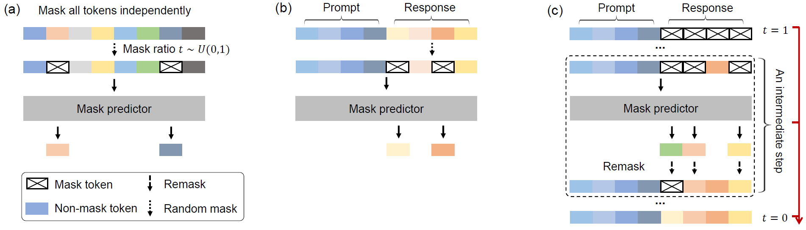

Understand and generate human language.
5 papers
Written by Junkun Yuan.
Click here to go back to main contents.
Table of contents ▶
Papers are displayed in reverse chronological order. High-impact or inspiring works are highlighted in red.
Large Language Diffusion Models
Shen Nie, Fengqi Zhu, Zebin You, Xiaolu Zhang, Jingyang Ou, Jun Hu, Jun Zhou, Yankai Lin, Ji-Rong Wen, Chongxuan Li
Renmin University of China, Ant Group
arXiv, 2025
It introduces a masked diffusion language model (8B) that matches strong autoregressive LLMs while inherently enabling bidirectional reasoning.

Attention Is All You Need
Ashish Vaswani, Noam Shazeer, Niki Parmar, Jakob Uszkoreit, Llion Jones, Aidan N. Gomez, Lukasz Kaiser, Illia Polosukhin
Google Brain, Google Research, University of Toronto
Advances in Neural Information Processing Systems (NeurIPS), 2017
Jun 12, 2017 | Transformer
It revolutionized deep learning by introducing the Transformer architecture, which replaced recurrence with self-attention, enabling massively parallel training and becoming the foundational model for virtually all modern large-scale language systems. It has 192,000 citations (as of Sep 2025).
It introduces sequence transduction architecture relying solely on multi-head self-attention, dramatically reducing training time.
On-Policy Distillation
Thinking Machines
Thinking Machines
Website, 2025
Oct 27, 2025 | OPD
It grades every token of the student's own rollouts against a frozen teacher via reverse KL, achieving faster training.
On-Policy Distillation of Language Models: Learning from Self-Generated Mistakes
Rishabh Agarwal, Nino Vieillard, Yongchao Zhou, Piotr Stanczyk, Sabela Ramos, Matthieu Geist, Olivier Bachem
International Conference on Learning Representations (ICLR), 2024
Jun 23, 2023 | GKD
It trains the student on its own self-generated sequences using token-level feedback from the teacher, fixing the train-inference mismatch.
Direct Preference Optimization: Your Language Model is Secretly a Reward Model
Rafael Rafailov, Archit Sharma, Eric Mitchell, Stefano Ermon, Christopher D. Manning, Chelsea Finn
Stanford University, CZ Biohub
Advances in Neural Information Processing Systems (NeurIPS), 2023
May 29, 2023 | DPO
It offers a simple, RL-free recipe to turn human preference data into aligned language models with equal or better performance than RLHF while eliminating reward-model training and heavy hyper-parameter tuning overhead. It has over 5,000 citations (as of Sep 2025).
It introduces DPO, a single-stage, RL-free algorithm that directly optimizes a language model on preference data by reparameterizing the Bradley-Terry objective into a simple classification loss.
Last updated on May 21, 2026 at 10:35 (UTC-7).